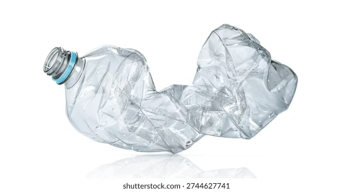
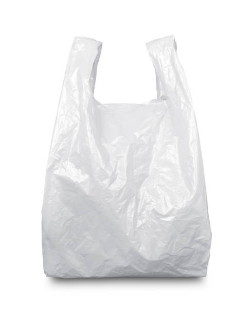

CURRENT YEAR 2026
inFuture
Your trash, in a 100 years.
Choose to see it's legacy

PLASTIC BOTTLE

PLASTIC BAG
PLASTIC SMTH ELSE
inFuture
Your trash, in a 100 years.
CURRENT YEAR 2026
Choose to see it's legacy

